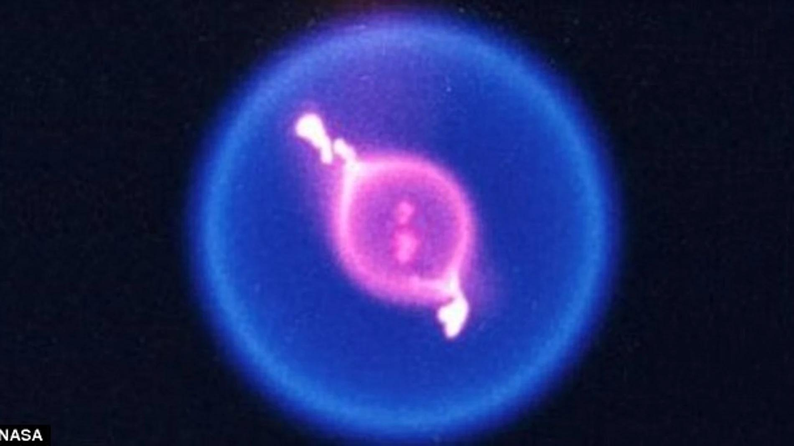

Flame in
Freefall
SI-Powered Fire Safety Insights from Microgravity Combustion Data. Discover how fire behaves in space and explore scientific solutions for safer future missions.
Explore the Project →
Fire behaves differently in space.
On Earth, gravity causes hot gases to rise and influences
the shape of a flame. In microgravity, this process changes.
Flames can become more spherical, and combustion products
behave differently. Fire detection and extinguishment can
therefore become more challenging.
As humans prepare to return to the Moon and travel to Mars,
understanding fire in spacecraft is essential for astronaut
safety. NASA experiments help researchers investigate
ignition, flame behavior and fire suppression in space.
Explore the project
Choose a section to investigate microgravity combustion and discover new insights from space research.
Fire Simulator
Explore ignition and flame behavior under different conditions.
OPEN SIMULATOR →NASA Data & Analysis
Analyze experimental data and discover scientific patterns.
EXPLORE DATA →Project Information
Learn about microgravity, combustion and NASA research.
LEARN MORE →AI Assistant
Ask questions about fire safety and combustion in space.
ASK AI →